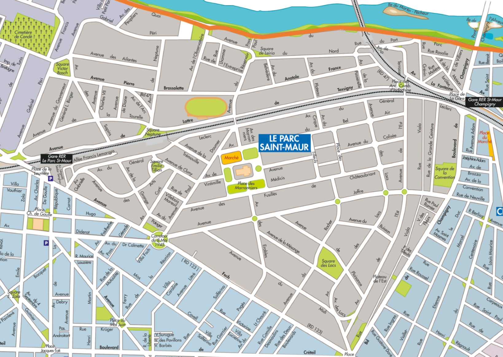

Le quartier du Parc Saint-Maur


l'avenue De Lattre-de-Tassigny

Découvrez l'avenue De Lattre-de-Tassigny
Découvrez l'avenue De Lattre-de-Tassignyl'Avenue du Général-Leclerc

Découvrez l'Avenue du Général-Leclerc
Découvrez l'Avenue du Général-Leclercl'Avenue des Fusillés de Châteaubriant
Découvrez l'Avenue des Fusillés de Châteaubriant
Découvrez l'Avenue des Fusillés de Châteaubriantl'Avenue Léopold-Sédar-Senghor
Découvrez l'Avenue Léopold-Sédar-Senghor
Découvrez l'Avenue Léopold-Sédar-Senghorl'Avenue Pierre-Brossolette
Découvrez l'Avenue Pierre-Brossolette'
Découvrez l'Avenue Pierre-Brossolette